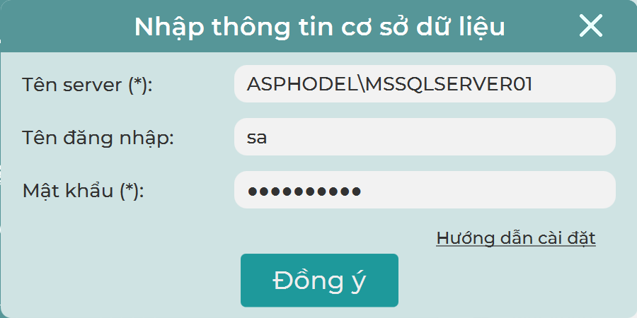
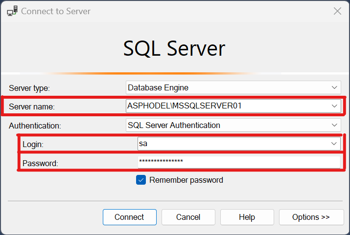

Phần mềm Quản lý nhân khẩu Lệ Lệ
Mục lục
Yêu cầu
Java SE Development Kit phiên bản 19.0.1 trở lên.
Kiểm tra phiên bản JDK hiện tại trên PC của bạn bằng các lệnh sau trên cmd:
javac -version
Nếu phiên bản hiện tại thấp hơn phiên bản yêu cầu, vui lòng cập nhật/cài đặt lại.
SQL Server phiên bản 2019 trở lên, MSSQL Server hoặc SQL Server Express.
SQL Server Management Studio (SSMS) phiên bản 19.
Cấu hình SQL Server
Kích hoạt Tài khoản SQL Server Authentication
Khởi động lại dịch vụ SQL Server sau mỗi bước để những thay đổi sau đây có hiệu lực.
Thay đổi Chế độ Authentication:
-
Đăng nhập vào SQL server instance bằng SQL Server Management Studio (SSMS). Nhấp chuột phải vào phiên bản cơ sở dữ liệu và đi đến Properties.
-
Trên trang Server Properties, Nhấp vào Security. Bật chế độ SQL Server and Windows Authentication.
-
Tại mục "Server proxy account", chọn "Enable server proxy account", tạo "Proxy Account" và tạo một mật khẩu, sau đó nhấn OK.
Kích hoạt đăng nhập Tài khoản SQL Server Auth:
-
Kết nối với phiên bản SQL Server bằng SSMS và chuyển đến Security > Logins.
-
Nhấp chuột phải vào tài khoản đã tạo và đi đến Login Properties.
-
Nhấp vào trang Status. Tại mục Login, nhấn Enable để kích hoạt đăng nhập bằng tài khoản, nhấn Ok.
-
Khởi động lại và đăng nhập vào SQL Server Instance trong SSMS bằng chế độ SQL Server Authentication. Nếu không thành công, hãy thử khởi động lại máy tính.
Bật giao thức TCP/IP
-
Mở SQL Server Configuration Manager.
-
Chọn thẻ SQL Server Network Configuration, chọn giao thức của SQL Server instance đang sử dụng.
-
Nhấp chuột phải và mở Properties, thay đổi cài đặt Enabled thành Yes.
-
Di chuyển đến thẻ IP Addresses -> IPAll, nhập 1433 vào mục TCP Port. Nhấn OK.
Chạy chương trình
Ở lần chạy đầu tiên, cửa sổ nhập thông tin Cơ sở Dữ liệu sẽ mở ra với các thông tin yêu cầu bao gồm: Tên SQL Server, Tên đăng nhập và mật khẩu.
Người dùng có thể lấy những thông tin này ở trong phần mềm SSMS như sau:
Cửa sổ này sẽ không hiện lại ở những lần chạy tiếp theo, tuy nhiên người dùng vẫn có thể mở nó trong cửa sổ đăng nhập.
Lưu ý: Thông tin tên đăng nhập là không bắt buộc và mặc định là "sa", thông tin tên Server và mật khẩu là bắt buộc
Những người đóng góp
Giấy phép
Được cấp phép theo giấy phép MIT